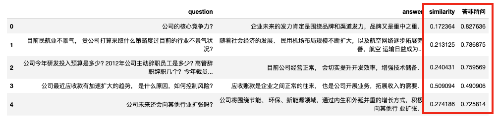

一、「答非所问」相关文献
问:“公司的核心竞争力?”
答:“企业未来的发力肯定是围绕品牌和渠道发力，品牌又是重中之重．”
回答与问题之间的相似度越高，则回答与问题就越契合 ，回答质量越高。因此，在会计财经领域的研究中，答非所问程度是一个很有使用价值的指标。
卞世博,管之凡,阎志鹏.答非所问与市场反应:基于业绩说明会的研究[J].管理科学学报,2021,24(04):109-126.
摘要:对上市公司业绩说明会中投资者与管理层问答互动中管理层答非所问的现象进行了研究.本文以中小板和创业板上市公司召开的业绩说明会作为研究样本,利用文本分析方法对业绩说明会中管理层在回答投资者提问时答非所问的程度进行度量,进而实证分析了管理层的答非所问与市场反应和公司未来业绩表现之间的可能关联.结果发现:在控制其它因素之后,管理层的答非所问与市场反应之间呈现显著的负相关关系,即公司管理层的答非所问程度越高,随后公司股票的市场表现则就会越差,并且对于那些低分析师关注的公司尤为明显;而在公司未来业绩表现方面,管理层答非所问的程度越高,则公司未来的业绩表现则会越差.
郭照蕊,袁嘉浩,傅毅.上市公司“答非所问”程度与审计费用——基于年报问询函与回函的综合研究[J].审计研究,2023,No.231(01):99-111.
摘要:年报问询函是证券交易所向年报披露存疑的上市公司发出的函件，有问有答才构成一次有效的问询回合，因此综合考察年报问询函和回函的经济后果更具意义。本文通过对2015-2020年间年报问询函及上市公司相应回函的文本分析构建了“答非所问”程度指数并实证考察了其对审计费用的影响，结果发现，“答非所问”程度指数越高，上市公司支付的审计费用越高，进而表明，有针对性的释疑能够降低审计费用，回函质量的高低直接影响上市公司因问询函而支付的审计费用“溢价”。该现象受到一系列公司内外部特征的影响，相对于问询函回函长度越长、内部治理水平和外部制度环境越差，审计费用受“答非所问”程度影响而提升得越明显。本文从审计费用的视角证实了高质量的回函对上市公司发挥了积极作用。
二、为什么使用「软余弦相似度」测量「答非所问」
关于「软余弦相似度」测量， 本质上其实就是两个文本的相似程度，相似程度越低， 答非所问程度越高。 但问答是一种特殊的场景， 直接使用余弦相似度测量会很不准，目前主要使用软余弦相似度进行测量。 原因有以下几点：
- 考虑语义关系：软余弦相似度能够考虑词语之间的语义关系，而在问询和业绩说明会问答环节中，问题和答案之间可能存在词语的近义词、同义词以及语义相似的情况。软余弦相似度通过使用词向量来捕捉词语的语义信息，能够更好地度量问题和答案之间的语义相似度，从而更准确地判断它们之间的相似程度。
- 考虑词语权重：软余弦相似度通常使用TF-IDF来计算词语的权重，这能够在计算相似度时对词语进行加权，更加准确地反映词语在问题和答案中的重要性。在问询和业绩说明会问答环节中，问题和答案中的词语可能具有不同的重要性，某些关键词可能对于判断相似度起着重要作用。软余弦相似度能够考虑这种权重差异，从而更好地衡量问题和答案之间的相似度。
- 考虑词语变体和同义词：在问询和业绩说明会问答环节中，问题和答案之间可能存在词语的变体或同义词。软余弦相似度在词向量的计算过程中，能够通过训练语料库中的上下文信息，将相似的词语映射到相似的向量表示，从而能够更好地处理词语的变体和同义词，提高相似度计算的准确性。
综上所述，软余弦相似度在问询和业绩说明会问答环节的相似度计算中具有优势，能够更好地考虑语义关系、词语权重以及词语变体和同义词等因素，从而提高问答相似度的准确性和可靠性。
需要注意， 答非所问程度 = 1 - 软余弦相似度
三、「答非所问」代码
文件树结构
软余弦相似度-答非所问
|--Word2Vec
|--mda01-22.200.6.bin
|--mda01-22.200.6.bin.vectors.npy
|--mda01-22.200.6.bin.syn1neg.npy
|--问答数据.csv
|--代码.ipynb
除 **Word2Vec/mda01-23.200.6.bin** 是付费内容， 其余内容均都是公开的。
100元 Word2Vec相关模型文件(mda01-23.200.6.bin)
加微信 372335839， 备注「姓名-学校-专业-word2vec」
3.1 环境准备
打开命令行， 执行以下安装命令
pip3 install gensim==4.3.2
pip3 install jieba==0.42.1
pip3 install pandas==2.0.3
3.2 计算一个问答「答非所问程度」
谷歌搜 「soft cosine similarity」，能找到相关代码，我使用gensim提供的英文文本的「软余弦相似度」，更改适配成中文的代码。
如果问答数据量很大，可以把所有文本堆到一个txt中，训练出对应的word2vec模型。这里大邓偷懒，找一个财经领域的语料训练出的word2vec模型。 之前分享过 词向量(付费) | 使用MD&A2001-2023语料训练Word2Vec模型 ， 购买后可得到财经语料的 Word2Vec模型文件 mda01-23.200.6.bin。
from gensim.corpora import Dictionary
from gensim.models import TfidfModel
from gensim.similarities import SparseTermSimilarityMatrix, WordEmbeddingSimilarityIndex
from gensim.models import KeyedVectors
import jieba
#导入预训练word2vec模型
w2v_model = KeyedVectors.load('Word2Vec/mda01-23.200.6.bin')
#软余弦相似度
def soft_cosine(row):
question = jieba.lcut(row['question'])
answer = jieba.lcut(row['answer'])
docs = [question, answer]
DICTION = Dictionary(docs)
docs2 = [DICTION.doc2bow(doc) for doc in docs]
TFIDF = TfidfModel(docs2)
termsim_index = WordEmbeddingSimilarityIndex(w2v_model.wv)
termsim_matrix = SparseTermSimilarityMatrix(termsim_index, DICTION, TFIDF)
similarity = termsim_matrix.inner_product(docs2[0], docs2[1], normalized=(True, True))
return similarity
row = {'question':'公司的核心竞争力?',
'answer': '企业未来的发力肯定是围绕品牌和渠道发力，品牌又是重中之重．'}
#该问答的软余弦相似度
soft_cosine(row)
Run
0.17236403
该问答的软余弦相似度为0.17236403， 则答非所问程度1-0.17236403 = 0.82763597
需要注意， 答非所问程度 = 1 - 软余弦相似度
3.3 计算多个问答「答非所问程度」
点击下载本文实验数据 问答数据.csv
import pandas as pd
#问答实验数据
df = pd.read_csv('问答数据.csv')
df
建议各位将问答数据整理到csv或者xlsx格式， 第一列question字段， 第二列为answer字段，保证字段名与本代码一致。
import pandas as pd
from gensim.corpora import Dictionary
from gensim.models import TfidfModel
from gensim.similarities import SparseTermSimilarityMatrix, WordEmbeddingSimilarityIndex
from gensim.models import KeyedVectors
import jieba
#导入预训练word2vec模型
w2v_model = KeyedVectors.load('Word2Vec/mda01-23.200.6.bin')
#软余弦相似度
def soft_cosine(row):
question = jieba.lcut(row['question'])
answer = jieba.lcut(row['answer'])
docs = [question, answer]
DICTION = Dictionary(docs)
docs2 = [DICTION.doc2bow(doc) for doc in docs]
TFIDF = TfidfModel(docs2)
termsim_index = WordEmbeddingSimilarityIndex(w2v_model.wv)
termsim_matrix = SparseTermSimilarityMatrix(termsim_index, DICTION, TFIDF)
similarity = termsim_matrix.inner_product(docs2[0], docs2[1], normalized=(True, True))
return similarity
#批量计算
df = pd.read_csv('问答数据.csv')
df['similarity'] = df.apply(soft_cosine, axis=1)
df['答非所问'] = 1 - df['similarity']
df

四、资料获取
除 **Word2Vec/mda01-23.200.6.bin** 是付费内容， 其余内容均都是公开的。
100元 Word2Vec相关模型文件(mda01-23.200.6.bin)
加微信 372335839， 备注「姓名-学校-专业-word2vec」